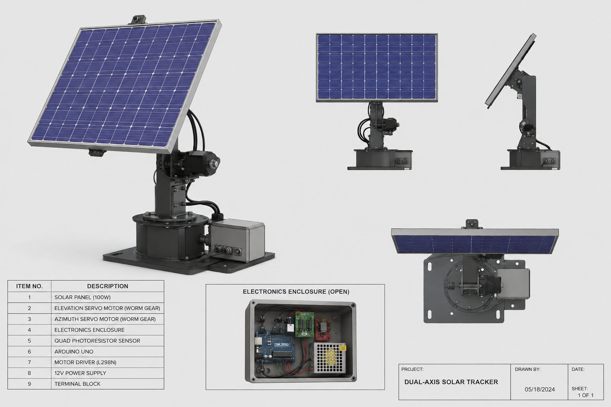

PRJ-01
Built

Dual-Axis Solar Tracker
Mechatronics · CAD · Controls
A two-axis tracking platform that keeps a PV panel normal to the sun all day. A quad-photoresistor array senses the sun's position; an Arduino closed-loop controller compares light-intensity differentials and drives azimuth and elevation corrections in real time, lifting energy capture over a fixed-tilt baseline.
Actuation
2× NEMA Stepper
Drivetrain
Worm Gear
Sensing
4× LDR Array
Control
Closed-Loop
ArduinoFusion 360C/C++